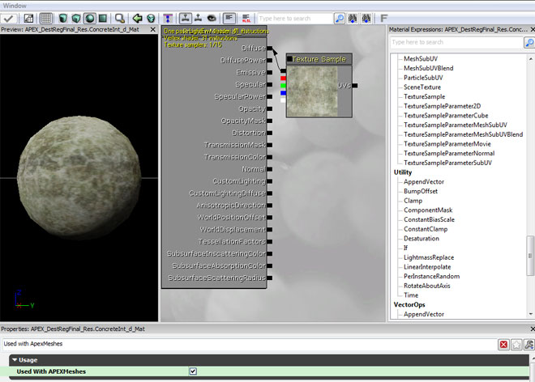
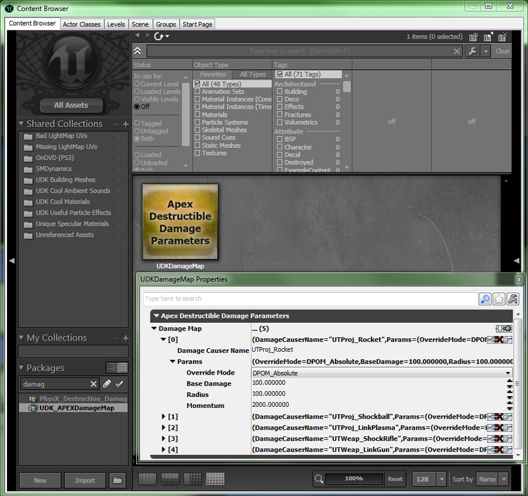
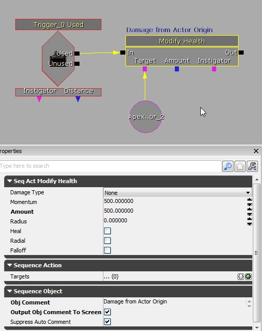
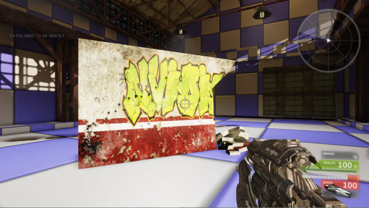

UDN
Search public documentation:
APEXDestructionCH
English Translation
日本語訳
한국어
Interested in the Unreal Engine?
Visit the Unreal Technology site.
Looking for jobs and company info?
Check out the Epic games site.
Questions about support via UDN?
Contact the UDN Staff
日本語訳
한국어
Interested in the Unreal Engine?
Visit the Unreal Technology site.
Looking for jobs and company info?
Check out the Epic games site.
Questions about support via UDN?
Contact the UDN Staff
UE3中的APEX Destruction
概述
获得工具
指南
导入APEX Destruction到UE3中
- 在材质编辑器 创建一个材质并设置 Used With APEXMeshes?(和APEXMeshes协同使用?) 标志。

- 导入您使用PhysXLab创建的.apx文件。
- 打开Apex Destructible Asset(Apex可破坏资源)的属性并设置 Material(材质) 为您将要应用到可破坏网格物体的上的UE3材质。在该图片中您可以看到有一个外部材质分配给了插槽0，一个内部材质分配给了插槽1。

在关卡中创建一个APEX可破坏Actor
- 在通用浏览器中选择 Apex Destructible Asset(Apex可破坏资源)并右击关卡编辑器中您想放置该actor的地方来放置它。
- 根据需要针对缩放actor。

Apex可破坏资源属性
- Materials(材质) - 材质中包含了一组可以重新映射到这个资源上的材质。
- FractureMaterials(破裂材质) - 针对每个破裂级别的破裂效果。
- DefaultPhysMaterial(默认物理材质) - 这个资源所使用的默认物理材质。如果actor在其网格物体组件中定义了一个物理材质，那么则使用那个物理材质作为替换。
- CrumbleEmitterName（崩塌发射器名称） - 用于产生崩塌效果的NxMeshParticleSystem的名称。如果指定该项，这将会覆盖NxDestructibleAsset中定义的崩塌系统。
- DustEmitterName(灰尘发射器名称) - 破裂线处灰尘所使用的NxMeshParticleSystem 的名称。如果指定该项，这将会覆盖NxDestructibleAsset 中定义的灰尘系统。
- DestructibleParameters(可破坏参数) - 控制破坏属性的参数。可破坏参数包含了关于当可破坏物受到撞击时所表现的行为、碎片在删除前可以到达距离资源多远的地方及可以存留多长时间的详细设置。
- DamageParameters(伤害参数) - 针对块伤害的参数。
- DamageThreshold(伤害阈值) - 导致一个块从可破坏资源上破裂(脱落)所需的伤害量。这个值通过传入到NxDestructibleActor::applyDamage或NxDestructibleActor::applyRadiusDamage的伤害值获得或者通过冲力获得(请参照'forceToDamage(伤害力)')。
- DamageSpread(伤害传播) - 控制伤害传递到可破坏物中的距离。通过应用到块上的伤害乘以DamageSpread的值来获得传递距离。将会给该距离半径内的所有块应用伤害。根据每个块到伤害应用位置的距离的不同，应用到每个块的伤害量也是不同的。当距离为0时应用全部伤害，当距离在伤害半径处时则应用的伤害为0。
- ImpactDamage(冲力伤害) - 如果一个块所处的深度处设置了NX_DESTRUCTIBLE_TAKE_IMPACT_DAMAGE(请参照DepthParameters(深度参数))，那么当一个块在NxScene中发射碰撞时，它将受到的伤害为ImpactDamage(冲力伤害)乘以冲力的值。 默认值是0，这将有效地禁止冲力伤害。
- ImpactResistance(抗冲击力) - 当一个块由于物理接触而受到冲力伤害时(请参照DepthParameters)，这个参数是该接触可以产生的最大冲力。像玻璃这样的抗冲击力较弱的材质可以设置为较低的值，以便在其破裂过程中较重的物体可以穿过它。注意: 设置这个参数为0将会禁用冲力上限；也就是0代表无穷大。默认值 = 0.0f。
注意: 在2012年11月的经过QA验证的UDK版本中，将该参数设置为非0值将会导致APEX中产生死锁。 该问题将在APEX 1.2.3发布版本中进行修复。 - DefaultImpactDamageDepth(默认冲力伤害深度) - 默认情况下，冲力伤害可以应用到这个深度。要想使用某个特定深度，可以在DepthParameters(深度参数)中覆盖这个默认值。如果该项设置为负数，那么将会禁用冲力伤害。
- DebrisParameters(碎片参数) - 针对块碎片设置的参数。
- DebrisLifetimeMin(碎片最小生命周期) - "碎片块" (请参照debrisDepth（碎片深度）) 在脱离非碎片块一段时间(以秒为单位)后将会销毁。根据该模块的LOD设置的不同，实际的生命周期将是这两个值之间的插值。要想禁用生命周期，可以在标志域中清除NX_DESTRUCTIBLE_DEBRIS_TIMEOUT 标志。如果debrisLifetimeMax < debrisLifetimeMin，那么这两个属性都使用这两个属性的值的平均值。默认debrisLifetimeMin = 1.0, debrisLifetimeMax = 10.0f。
- DebrisLifetimeMax - "
- DebrisMaxSeparationMin - 如果“碎片块”从它们的原始物体分离后的距离大于maxSeparation(最大分离距离)，那么将会销毁这些“碎片块”。根据该模块的LOD设置的不同，实际的maxSeparation(最大分离距离)将是这两个值之间的插值。要想禁用maxSeparation(最大分离距离)，可以在标志域中清除NX_DESTRUCTIBLE_DEBRIS_MAX_SEPARATION标志。如果debrisMaxSeparationMax < debrisMaxSeparationMin，那么这两个属性的值都使用这两个属性值的平均值。默认debrisMaxSeparationMin = 1.0, debrisMaxSeparationMax = 10.0f。
- DebrisMaxSeparationMax - "
- ValidBounds(有效边界) - 如果“破碎块”从其原始物体分离后所处距离大于maxSeparation(最大分离距离)乘以原始可破坏资源尺寸的结果，则销毁这些“破碎块”。 根据该模块的LOD设置的不同，实际的maxSeparation(最大分离距离)将是这两个值之间的插值。要想禁用maxSeparation(最大分离距离)，可以在标志域中清除NX_DESTRUCTIBLE_DEBRIS_MAX_SEPARATION标志。如果debrisMaxSeparationMax < debrisMaxSeparationMin，那么这两个属性的值都使用这两个属性值的平均值。默认debrisMaxSeparationMin = 1.0, debrisMaxSeparationMax = 10.0f。
- AdvancedParameters -很少使用的参数。请参照NxDestructibleAdvancedParameters。
- DamageCap(伤害上限) - 限制应用到块上的伤害量。这对于防止由于应用非常大的伤害而将整个可破坏物体被摧毁是有用的。当应用冲力伤害时，这是很容易发生的，并且伤害量和冲力成比例关系(请参照forceToDamage（伤害力）部分)。
- ImpactVelocityThreshold(碰撞速度阈值) - 如果在刚体彼此内部生成了很多刚体，那么将会产生很大的冲力。在这种情况下，两个物体的相对速度将是较低的。这个变量允许用户设置碰撞的最大速度阈值，以确保物体以最小速度运动，以便可以考虑到冲力。
- MaxChunkSpeed(最大的块速度) - 如果该值大于0，那么破裂块的速度将不能超过这个值。可以使用值0来禁用这个功能(0是默认值)。
- MassScaleExponent(质量标度指数) -请参照MassScale(质量标度)。小于1的值将会降低不同质量的比率。MassScaleExponent的值越接近于0，那么比率将会增长变得越“不明显”。 当有大量交互的刚体(比如一堆可破坏的块)时，这可以辅助PhysX聚合它们。有效范围： [0,1]. 默认值= 0.5。
- MassScale(质量标度) - 动态的孤立块将会将其质量处理MassScale，得到的结果在使用MassScaleExponent作为指数求幂，然后再和MassScale相乘。请参照MassScaleExponent(质量标度指数)。有效范围： (0,无穷大)。默认值= 1.0。
- FractureImpulseScale(破裂比例范围) - 当块破裂时沿着块的法线应用的冲力所使用的比例因数。应用这个值是为了使得碎片可以按照它们破裂的方式飞出。
- SupportDepth(支撑深度) -在此处可以创建一个支撑图的块层次结构深度。较高的深度级别可以呈现出更加详细的支撑，但是将会导致更高的计算量。在支撑深度以下的块将永远不会受到支撑。
- MinimumFractureDepth - 低于这个深度的碎块将不会脱落。
- DebrisDepth(碎块深度) - 块层次深度，此处的块被认为是“碎片”。 位于这个深度或低于该深度的块将被认为是针对各种碎片设置的，比如debrisLifetime。负值则意味着任何块深度都不看做碎片。默认值是-1。
- EssentialDepth（基本深度） - 将永远处理达到该块层次结构深度的块。认为这些块对于游戏性或视觉效果来说是必不可少的。最小值是0，意味着将总认为层次级别为0的块是必不可少的。默认值是0。
- Flags(标志) - NxDestructibleParametersFlag中定义的一组标志。
- ACCUMULATE_DAMAGE - 如果设置该项，那么块将会“累积记忆”应用到它们上面的伤害，以便所应用的低于伤害阈值的很多伤害累积起来最终可以使该块破裂。如果不设置该项，那么要想破裂该块，就必须向该块应用一个超过伤害阈值的伤害。
- ASSET_DEFINED_SUPPORT - 如果设置了该项，那么标记为“支撑”的块(通过NxDestructibleChunkDesc::isSupportChunk)将会在其静态的可破坏资源中具有环境支撑物。注意： 如果ASSET_DEFINED_SUPPORT和WORLD_SUPPORT都进行了设置，那么为了获得环境支撑，这些块必须标记为“支撑”块并和NxScene的静态几何体相重叠。
- WORLD_SUPPORT - 如果设置该项，那么和NxScene的静态几何体相重叠的块将会在静态可破坏资源中具有环境支撑。注意： 如果ASSET_DEFINED_SUPPORT和WORLD_SUPPORT都进行了设置，那么为了获得环境支撑，这些块必须标记为“支撑”块并和NxScene的静态几何体相重叠。
- DEBRIS_TIMEOUT - 深度位于“碎片”深度(请参照NxDestructibleParameters::debrisDepth)或低于该深度的块是否会过期。根据可破坏模块的LOD设置的不同，该生命周期的值是NxDestructibleParameters::debrisLifetimeMin和NxDestructibleParameters::debrisLifetimeMax之间的值。
- DEBRIS_MAX_SEPARATION - 如果深度位于“碎片”深度(请参照NxDestructibleParameters::debrisDepth)或低于该深度的块分离时距离它们的原始资源太远是否要删除它们。根据可破坏模块的LOD设置的不同，该maxSeparation（最大分离距离）的值是NxDestructibleParameters::debrisMaxSeparationMin和NxDestructibleParameters::debrisMaxSeparationMax之间的值。
- CRUMBLE_SMALLEST_CHUNKS - 如果设置该项，那么最小的块可以进一步破裂，如果没有指定崩塌破碎粒子系统，那么可以通过流体崩塌（如果在NxDestructibleActorDesc中指定了一个崩塌粒子系统）或者通过简单地删除该块来完成。注意： “最小的块”一般定义为破裂层次结构中最深的那层。但是，如果使用非零值调用了NxModuleDestructible::setMaxChunkDepthOffset，那么可以从结构中较高的层次获得最小块。
- ACCURATE_RAYCASTS - 如果设置该项，NxDestructibleActor::rayCast函数将会在最近的可见块碰撞中搜索和子块的碰撞。这用于获得更好的线投射位置和法线，以防父项碰撞体积不能紧紧地包围图形网格物体。但返回的块索引将总是相交的可见父项的索引。
- USE_VALID_BOUNDS - 如果设置该项，则使用NxDestructibleParameters的ValidBounds域。这些边界平移到(但不会缩放或旋转)可破坏actor的原点处。如果一个块或者孤立的块移动超出了这些边界，那么将销毁它们。
- FORM_EXTENDED_STRUCTURES - 如果可破坏资源最初是静态的，那么它将会变为扩展的支撑架构的一部分；如果他和另一个静态可破坏资源相接触，那么也要设置该标志。
- DepthParameters - 应用到给定层次上的每个块的参数。数组中的元素[0]应用到层次0(未破裂的)的块上，元素[1]应用到层次1的块上，以此类推。
-
- ImpactDamageOverride - 达到深度DefaultImpactDamageDepth的块将会受到冲击伤害，除非选择了其中一个覆盖选项(请参照EImpactDamageOverride)。
-
- DynamicChunksDominanceGroup - 当破裂时为动态碎块创建的可选支配组。(如果该值大于31或小于0则忽略该项)。 默认为-1，仅用了该功能。
- UseDynamicChunksGroupsMask - 是否为动态碎块使用 DynamicChunksChannel和DynamicChunksCollideWithChannels。 如果该值为false，那么为所有碎块使用针对ApexDestructibleActor定义的RB通道，无论是动态碎块还是静态碎块。 如果该项为true，那么将为动态碎块使用DynamicChunksChannel和DynamicChunksCollideWithChannels。
- DynamicChunksChannel - 如果UseDynamicChunksGroupsMask 为True，这项中的枚举值指出了在刚体碰撞中动态碎块应该考虑哪种类型的对象。
- DynamicChunksCollideWithChannels - 如果UseDynamicChunksGroupsMask 为TRUE，该项指出了将会和动态碎块发生碰撞的对象类型。
- DamageParameters(伤害参数) - 针对块伤害的参数。
处理脱落的碎块
很多人问过使得碰撞到地面的碎块淡出的功能。 不幸的是，没有简单的方法完成该功能，因为破坏效果是在一个单独的描画函数中描画的，以便提高性能。 从场景中删除碎块的一个较好的选择是使用位于 BaseEngine.ini (2012年7月QA版本之前)或2012年7月及后续版本中的 BaseSystemSettings.ini 中的 ApexDestructionMaxChunkIslandCount 和 ApexDestructionMaxShapeCount 。 这将使您可以控制您在场景中最多可以具有多少个碎块。 一旦您达到极限，APEX将基于您的当前位置开始删除将具有最小屏幕空间的碎块。 结果是距离玩家较近的较大的碎块将具有更大重量，并在场景中存在的时间比远处的较小的碎块长。 最后的结果是您的游戏中将呈现出具有较多持久破坏物的情形，因为这些块将一直存在直到需要为其他块腾出空间而需要删除为止。 通过使用GPU刚体加速可以增加您的系统可以处理的随块的数量。 (请参照以下的"Enabling GPU Rigid Bodies（启用GPU刚体）" )调整可破坏块的数量
下面的值可以在 UnrealEngine3\Engine\Config\BaseEngine.ini 中进行修改：- ApexDestructionMaxChunkIslandCount - 允许创建的可破坏块的最大数量。 这个数量越少，物理消耗越少。
- ApexDestructionMaxShapeCount - 允许创建的形状的最大数量。 这个数量至少应该与块的数量相匹配
防止和碎块发生碰撞
如果您想组织玩家控制器和地面上的碎块发生碰撞，那么可以在 Pawn.uc 中设置 bMoveIgnoresDestruction=true 并重新编译脚本。启用GPU刚体
为了启用GPU刚体，您需要在 UnrealEngine3\Engine\Config\BaseEngine.ini 或 UnrealEngine3\Engine\Config\BaseSystemSettings.ini 中设置以下信息，注意： GRB是在2012年7月的ＱＡ版本中引入的。- ApexGRBEnable=True
- ApexGRBGPUMemSceneSize=128 (max 256, dependent on the scene and number of destructibles)
- ApexGRBGPUMemTempDataSize=128 (max 256, dependent on the scene and number of destructibles)
- bDisablePhysXHardwareSupport=False(BaseEngine.ini)
修改武器伤害
UDK_APEXDamageMap 。您可以为您自己的游戏创建新的伤害映射。武器是通过字符串进行引用的，以避免加载关卡时出现的引用问题。如果您创建你自己的伤害映射，那么请在 DefaultEngine.ini 中设置它的名称：
ApexDamageParamsName=UDK_APEXDamageMap.UDKDamageMap
- Override Mode(覆盖模式)意味着它将针对APEX覆盖或添加默认武器设置。
- Base Damage(基本伤害)是武器所造成的伤害量。
- Radius(半径)是伤害半径的大小。
- Momentum(冲力) 是指武器施加给破碎块的能量的多少 (将使它们飞得更远)。

破坏效果的Kismet脚本

点破坏 最好是使用另一个actor来指定破坏的发生位置，在以下示例中我们所以用了“note”actor。- 将note（标记）actor放置于要产生的伤害的原点处，将该actor连接到modify health(修改生命值)动作中的target节点上。
- 设置伤害量(直接和伤害阈值相关联)、半径、碰到半径的标志。
 实际运行效果
以下展示了将note actor放置破坏的右下角的情形及效果！
实际运行效果
以下展示了将note actor放置破坏的右下角的情形及效果！


粉碎破坏效果
该技术允许您仿真一个分块粉碎为粒子的效果。- 设置碎片深度为您的破坏效果中的最后深度。
- 打开了碎块过时时间项，将其设置为一个非常小的值。
- 随着分块的消失将在最小深度处生成破裂材质。
关于在游戏机平台上破坏效果的帮助技巧
APEX Destruction(APEX破坏)可以用于游戏机平台，我们将一些针对游戏机平台的APEX示例作为SDK下载文件的一部分提供给大家。我们正在处理针对UE3的示例测试地图。实际的可破坏图形网格物体会增加内存占有量，所以对于游戏机平台来说，我们推荐：- 使用简单的网格物体，并仅破裂为大于20块或更少的碎片。
- 在PhysXLab中关闭碰撞质量，以便每个碎块仅有一个凸面外壳。
- 请不要使用噪点功能，因为那将大大地增加网格物体的大小。